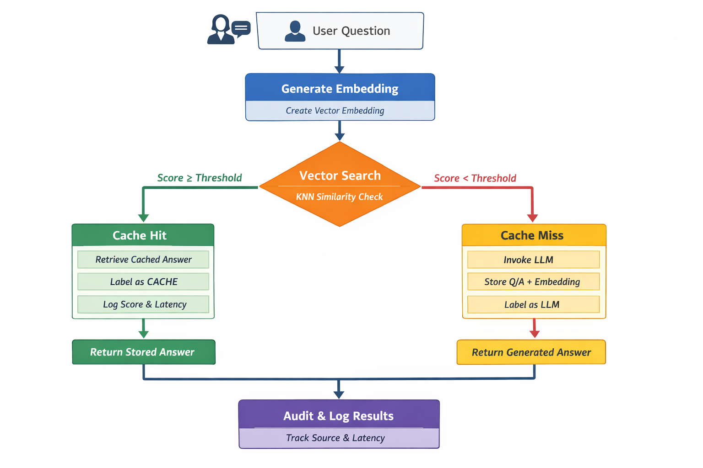

Agent Catalog is a production-grade AI retrieval system enforcing deterministic decision-making across Cache → Vector Search → LLM fallback.
It integrates Couchbase Vector Search, AWS Bedrock, and Streamlit to build explainable, auditable, and agent-ready AI pipelines.
User Question
|
v
[ Cache Lookup ]
|
|-- HIT → Return Cached Answer
|
v
[ Vector Search (Couchbase FTS) ]
|
v
[ Semantic Reranker (LLM) ]
|
|-- Above Threshold → Return Vector Result
|
v
[ LLM Fallback ]
|
v
Store + Return Answer
⚠️ Security note: Secrets should be moved to environment variables in production.
pip install -r requirements.txt
streamlit run hash_agentcatalog.py| Score | Description |
|---|---|
| Vector Score | Relative similarity from Couchbase FTS vector search |
| Semantic Score | LLM-based reranking relevance score |
| Threshold | Minimum score required to avoid LLM fallback |
This system can be exposed as a tool to:
Because results are scored, audited, and bounded, agents can:
hash_agentcatalog.py # End-to-end pipeline + UI requirements.txt # Python dependencies README.html # This document pipeline-flow.png # Image in same directory
The diagram below illustrates request flow, with deterministic gates controlling when (and if) an LLM is invoked.

Key principle: LLMs are used only when cheaper, deterministic retrieval layers fail to meet confidence thresholds.
MIT License — use freely, responsibly, and visibly.
Designed for engineers who want control, not magic.